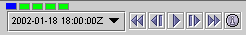
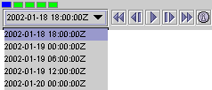

The [ht::popup TimeAnimationWidget.html {time animation widget}] in the
IDV can be used to control the properties of a time loop.

- Click on the dropdown box on the left side of the widget to
see the list of times that are in this display. It will
look something like this.

- Select the third time in the list to view the visualization for
that time step.
- Loop through the entire animation by clicking the
 button on the animation widget.
button on the animation widget.
- Stop the animation by clicking the
 button.
button.
- Return to the first time step by clicking the
 button.
button.
- Step forward through the animation one step at a time by
repeatedly clicking the
 button.
button.
- Step backward through the animation one step at a time by
repeatedly clicking the
 button.
button.
- Go to the last time step by clicking the
 button.
button.
- The row of boxes at the top of the widget
 is a visual indicator
of the current position in the animation sequence.
Click on a box to go to that point in the sequence.
is a visual indicator
of the current position in the animation sequence.
Click on a box to go to that point in the sequence.
- You can also use the boxes to skip particular timesteps. If you
right click (MB3) on a box, it will turn red indicating that
that step will be skipped. Right click on a box and then
start the animation to see that the timestep is skipped.
- Open the
Time Animation Properties editor
by clicking the  button.
button.
- Change
Direction to rock back and
forth by selecting the [ht::command Rocking] option from
the dropdown list and then click the [ht::button Apply]
button.
- Start the animation. When the loop reaches the last time step,
the animation steps backward. When it reaches the first time,
it goes forward again.
- Set the
First dwell
to be the same value as the Last dwell,
and then click the Apply button to
see the effect.
- Set the [ht::command Direction] back to [ht::command Forward].
You can also define your own time animation under the
[ht::tab Define Animation Times] tab. We'll look at that in
a later exercise.